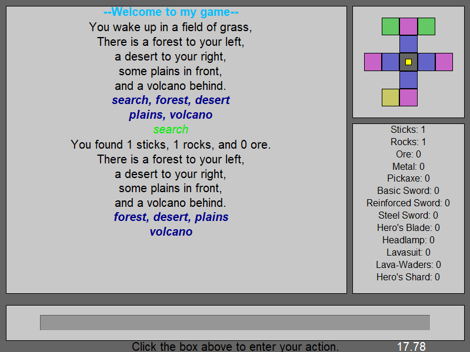

Projects:
I've worked on a number of personal projects over the years, from simple text-based games to bare-metal operating systems. Two of them, Voxarc and ThunderOS,
are for the express purpose of learning, but they have all contributed towards my understanding of software and programming.
Here's a list of my most significant projects.
-
Portfolio

That's this website, if it wasn't obvious.
As I started sending out applications for college internships, I decided it was a good time to start making a portfolio website. Conveniently enough, I was taking a web development course at the same time, which helped me get started. -
ThunderOS

I started this project with the desire to understand operating systems and how hardware interacts with software, and I wasn't disappointed. This project has led me through numerous twists, turns, and headaches, from setting interrupts to drawing terminals. It got me familiar with GDB, for better or worse, as well as QEMU and UEFI.
-
Voxarc

Voxarc is the first large scale learning project I ever undertook, greatly inspired by Handmade Hero. The idea was simple: create a full video game and engine without using any libraries. That is, no engines, no file parsers, no networking APIs, nothing. The only third-party code I allowed myself to use are those that are required: System APIs (like win32) and graphics APIs (like OpenGL or Vulkan).
It has gone through many, many revisions, with some subsystems having been written from scratch more than 10 times. It includes a custom asset file format and parser, an efficient 2D binpacker for texture atlases, a Multi-Channel Signed Distance Field glyph generator for fonts, custom heap (block) and stack (linear) memory allocators, and a fully-fledged UI system, with more features on the way. -
Image Editor

I never did make a name for this one. It started as a project for my high school Intro to Computer Science class, and I enjoyed it enough to do another two rewrites for later years (the classes were rather dry otherwise). It's written in Processing, and has a scrolling filter list with ~20 filters.
-
Legend of Lorefidine
Legend of Lorefidine (originally named The Quest) is the first of my projects that I consider a full program. Written in Python, it has text-based input, a color-coded graphical map, and a text log. It's undergone two revisions so far, though I plan to update it again.